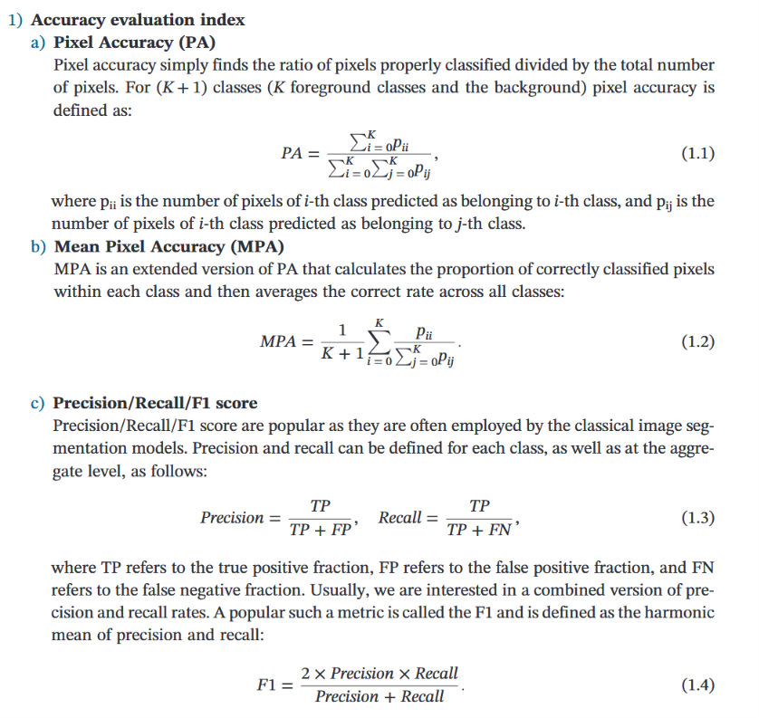
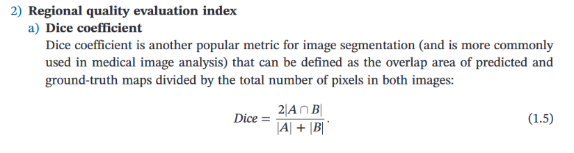
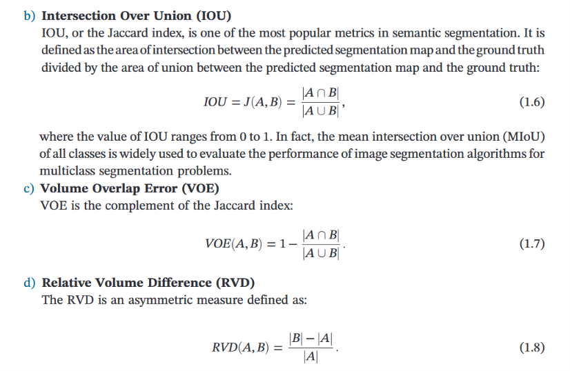
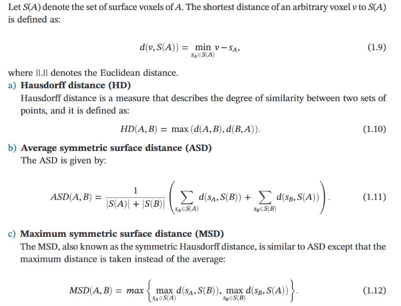

<!DOCTYPE html>


<html lang="zh-CN">


<head>
  <meta name="baidu-site-verification" content="codeva-NSg7ynviLa" />
  <meta charset="utf-8" />
    
  <meta name="viewport" content="width=device-width, initial-scale=1, maximum-scale=1" />
  <title>
    图像分割的评价指标 |  
  </title>
  <meta name="generator" content="hexo-theme-ayer">
  
  <link rel="shortcut icon" href="/images/mojie.jpg" />
  
  
<link rel="stylesheet" href="/dist/main.css">

  <link rel="stylesheet" href="https://cdn.jsdelivr.net/gh/Shen-Yu/cdn/css/remixicon.min.css">
  
<link rel="stylesheet" href="/css/custom.css">

  
  <script src="https://cdn.jsdelivr.net/npm/pace-js@1.0.2/pace.min.js"></script>
  
  

  

<link rel="alternate" href="/atom.xml" title="null" type="application/atom+xml">
</head>

</html>

<body>
  <div id="app">
    
      
    <main class="content on">
      <section class="outer">
  <article
  id="post-图像分割的评价指标"
  class="article article-type-post"
  itemscope
  itemprop="blogPost"
  data-scroll-reveal
>
  <div class="article-inner">
    
    <header class="article-header">
       
<h1 class="article-title sea-center" style="border-left:0" itemprop="name">
  图像分割的评价指标
</h1>
 

    </header>
     
    <div class="article-meta">
      <a href="/posts/94c6b1b9/" class="article-date">
  <time datetime="2026-11-10T07:04:48.000Z" itemprop="datePublished">2026-11-10</time>
</a>   
<div class="word_count">
    <span class="post-time">
        <span class="post-meta-item-icon">
            <i class="ri-quill-pen-line"></i>
            <span class="post-meta-item-text"> 字数统计:</span>
            <span class="post-count">1.3k</span>
        </span>
    </span>

    <span class="post-time">
        &nbsp; | &nbsp;
        <span class="post-meta-item-icon">
            <i class="ri-book-open-line"></i>
            <span class="post-meta-item-text"> 阅读时长≈</span>
            <span class="post-count">4 分钟</span>
        </span>
    </span>
</div>
 
    </div>
      
    <div class="tocbot"></div>


  
    <div class="article-entry" itemprop="articleBody">
       
  <p>为了评估图像分割算法的优劣，研究人员已开发出多种评价指标。这类指标主要模拟人类视觉感知机制，围绕错误率、分割轮廓质量、区域质量及其他相关维度构建。</p>
<span id="more"></span>
<h1 id="混淆矩阵">混淆矩阵</h1>
<p>在机器学习中，混淆矩阵是一个误差矩阵，常用来可视化地评估分类算法的性能。混淆矩阵是大小为 <span class="math inline">\(n \times n\)</span> 的矩阵，其中 <span class="math inline">\(n\)</span> 表示类别的数量。下表是二分类场景下的混淆矩阵。</p>
<table>
<thead>
<tr>
<th style="text-align: center;">真实值</th>
<th style="text-align: center;">预测值=1</th>
<th style="text-align: center;">预测值=0</th>
</tr>
</thead>
<tbody>
<tr>
<td style="text-align: center;">真实值=1</td>
<td style="text-align: center;">TP</td>
<td style="text-align: center;">FN</td>
</tr>
<tr>
<td style="text-align: center;">真实值=0</td>
<td style="text-align: center;">FP</td>
<td style="text-align: center;">TN</td>
</tr>
</tbody>
</table>
<blockquote>
<p><strong>注</strong>：TP (true positive)，即真阳性；FP (false positive)，即假阳性；FN (false negative)，即假阴性；TN (true negative)，即真阴性。</p>
</blockquote>
<p><strong>关键概念解释</strong>：</p>
<ul>
<li><strong>TP (True Positive)</strong>：正确预测为正类的像素。</li>
<li><strong>FP (False Positive)</strong>：错误预测为正类的像素（误报）。</li>
<li><strong>FN (False Negative)</strong>：错误预测为负类的像素（漏报）。</li>
<li><strong>TN (True Negative)</strong>：正确预测为负类的像素。</li>
</ul>
<p>因此，在模型评估中，通常先统计得出相应的混淆矩阵，然后再计算出相应的准确性评价指标。</p>
<h1 id="准确率评价指标"><strong>准确率评价指标</strong>：</h1>
<p>包括像素准确率（不分类别），平均像素准确率（每一类单独计算准确性，最后对所有类的准确性取均值），精确率/召回率/F1分数。</p>
<p><strong>精确率(Precision)</strong> ：衡量预测值为正的样本中实际为正的比例，在需要控制误检的场景（如自动驾驶障碍物检测）中尤为重要。</p>
<p><strong>召回率(Recall)</strong>：反映真实值为正的样本被正确检测的比例，在医疗影像等漏检代价高的场景具有关键价值。</p>
<p>这里 F1 分数是精确率和召回率的调和平均数，，用于在两者需要平衡时作为一个综合指标。F1 强迫模型不能”偏科”——只有一个高、另一个很低时，F1 都会被拉低。</p>
<p></p>
<h1 id="区域质量评价指标"><strong>区域质量评价指标</strong>：</h1>
<p>下文中 A 和 B 分别表示真实分割图与预测分割图。</p>
<p>包括 Dice 系数（等价于 F1 系数），交并比（IOU）等。Dice 系数和 F1 系数是同一个公式的“两个马甲”，只是出身不同（F1 来自信息检索/分类任务，Dice 来自生态学/统计学）。
<span class="math display">\[
Dice = 2TP / (2TP+FP+FN)
\]</span>
</p>
<p></p>
<h1 id="轮廓质量评价指标"><strong>轮廓质量评价指标</strong>：</h1>
<p>下面给的公式不清楚，而且这里第三个指标的 MSD 和 第一个指标 HD 是一样的，重复了。</p>
<p></p>
<p>这里详细解释一下。</p>
<p><strong>Hausdorff距离（HD）</strong> 是图像分割中一个重要的形状相似性度量指标。与关注逐像素重叠的指标不同，<strong>Hausdorff距离专注于衡量两个点集（如分割轮廓和真实轮廓）边界之间的最大不匹配程度</strong>。</p>
<p>简单来说，它回答了这样一个问题：“<strong>集合A中的哪一个点，离集合B中的任何一个点最远？这个最远的距离是多少？</strong>”。这个距离越小，说明两个集合的轮廓越吻合。</p>
<p>Hausdorff距离的计算分为两步：<strong>单向距离</strong>和<strong>双向距离</strong>。</p>
<ol type="1">
<li><p><strong>单向Hausdorff距离 (Directed Hausdorff Distance)</strong>
它衡量从集合A到集合B的单向最大不匹配度。</p>
<ul>
<li><p><strong>从A到B的单向距离</strong>（欧几里得距离），记作 ( h(A, B) )，定义为：
<span class="math display">\[
h(A, B) = \max_{a \in A} \left\{ \min_{b \in B} \| a - b \| \right\}
\]</span></p></li>
<li><p><strong>解读</strong>：对于集合A中的<strong>每一个点</strong> <code>a</code>，先找到它在集合B中<strong>距离最近</strong>的那个点 <code>b</code>，并计算它们之间的距离。然后，在所有<code>a</code>点计算出的这些“最近距离”中，取<strong>最大值</strong>。</p></li>
</ul></li>
<li><p><strong>双向Hausdorff距离 (Bidirectional Hausdorff Distance)</strong>
这才是我们通常所说的Hausdorff距离。它取两个方向单向距离的<strong>最大值</strong>，以保证对称性。</p>
<ul>
<li><p><strong>公式</strong>：
<span class="math display">\[
H(A, B) = \max \left( h(A, B), h(B, A) \right)
\]</span></p></li>
<li><p><strong>解读</strong>：<code>h(A, B)</code> 衡量了集合A中的点是否都被集合B“覆盖”到；而 <code>h(B, A)</code> 则衡量了集合B中的点是否都被集合A“覆盖”到。最终结果取两者中的较大值，代表了两个集合之间最严重的偏离程度。</p></li>
</ul></li>
</ol>
<p>在实际使用中，需要注意以下几点：</p>
<ul>
<li><strong>距离度量</strong>：最常用的是<strong>欧几里得距离</strong>，但也支持<strong>曼哈顿距离</strong>或<strong>棋盘距离</strong>等。</li>
<li><strong>方向性</strong>：可以选择计算<strong>单向</strong>（<code>directed=True</code>）或<strong>双向</strong>（<code>directed=False</code>）距离。</li>
<li><strong>百分位数（Percentile）</strong>：由于标准Hausdorff距离对离群点极其敏感，一个常用变体是<strong>百分位数Hausdorff距离</strong>（如95% HD）。它忽略最极端的5%距离，取第95百分位的距离作为结果，以增强鲁棒性。</li>
<li><strong>平均Hausdorff距离</strong>：另一种变体是计算所有点到对方集合的<strong>平均</strong>距离，而不是取最大值，这能提供一个更全局的轮廓匹配度量。</li>
</ul>
<p><strong>平均Hausdorff距离（AVD，Average Hausdorff Distance）</strong>公式如下（类似图中第二个公式的 ASD）
<span class="math display">\[
\text(AVD)(A,B) = \max(d(A,B),d(B,A))
\]</span>
其中
<span class="math display">\[
d(A, B) = \frac{1}{N} \sum_{a \in A} \min_{b \in B} ||a - b||
\]</span></p>
<h1 id="参考文献">参考文献</h1>
<ol type="1">
<li>Lei T, Nandi A K. Image Segmentation: Principles, Techniques, and Applications[M]. New Jersey: Wiley, 2022.</li>
</ol>
 
      <!-- reward -->
      
    </div>
    

    <!-- copyright -->
    
    <div class="declare">
      <ul class="post-copyright">
        <li>
          <i class="ri-copyright-line"></i>
          <strong>版权声明： </strong>
          
          本博客所有文章除特别声明外，著作权归作者所有。转载请注明出处！
          
        </li>
      </ul>
    </div>
    
    <footer class="article-footer">
       
    </footer>
  </div>

   
  <nav class="article-nav">
    
      <a href="/posts/1b7059a9/" class="article-nav-link">
        <strong class="article-nav-caption">上一篇</strong>
        <div class="article-nav-title">
          
            win11禁止系统更新
          
        </div>
      </a>
    
    
      <a href="/posts/6bf756e7/" class="article-nav-link">
        <strong class="article-nav-caption">下一篇</strong>
        <div class="article-nav-title">深度学习模型训练中有用的可视化图</div>
      </a>
    
  </nav>

  
   
     
</article>

</section>
      <footer class="footer">
  <div class="outer">
    <ul>
      <li>
        Copyrights &copy;
        2019-2026
        <i class="ri-heart-fill heart_icon"></i> Vincere Zhou
      </li>
    </ul>
    <ul>
      <li>
        
        
        <span>
  <span><i class="ri-user-3-fill"></i>访问人数:<span id="busuanzi_value_site_uv"></span></s>
  <span class="division">|</span>
  <span><i class="ri-eye-fill"></i>浏览次数:<span id="busuanzi_value_page_pv"></span></span>
</span>
        
      </li>
    </ul>
    <ul>
      
    </ul>
    <ul>
      
    </ul>
    <ul>
      <li>
        <!-- cnzz统计 -->
        
      </li>
    </ul>

    <!-- 运行天数 -->
	<ul>
		<li><span id="runtime_span"></span></li>
	</ul>
    <script type="text/javascript">			
        function show_runtime() {
            window.setTimeout("show_runtime()", 1000);
            X = new Date("08/15/2019 21:50:56");
            Y = new Date();
            T = (Y.getTime() - X.getTime());
            M = 24 * 60 * 60 * 1000;
            a = T / M;
            A = Math.floor(a);
            b = (a - A) * 24;
            B = Math.floor(b);
            c = (b - B) * 60;
            C = Math.floor((b - B) * 60);
            D = Math.floor((c - C) * 60);
            runtime_span.innerHTML = "小站在各种崩坏中坚持了: " + A + "天" + B + "小时" + C + "分" + D + "秒"
        }
        show_runtime();
    </script>

  </div>
</footer>
      <div class="float_btns">
        <div class="totop" id="totop">
  <i class="ri-arrow-up-line"></i>
</div>

      </div>
    </main>
    <aside class="sidebar on">
      <button class="navbar-toggle"></button>
<nav class="navbar">
  
  <div class="logo">
    <a href="/"></a>
  </div>
  
  <ul class="nav nav-main">
    
    <li class="nav-item">
      <a class="nav-item-link" href="/">主页</a>
    </li>
    
    <li class="nav-item">
      <a class="nav-item-link" href="/archives">归档</a>
    </li>
    
    <li class="nav-item">
      <a class="nav-item-link" href="/categories">分类</a>
    </li>
    
    <li class="nav-item">
      <a class="nav-item-link" href="/tags">标签</a>
    </li>
    
    <li class="nav-item">
      <a class="nav-item-link" href="/friends">友链</a>
    </li>
    
    <li class="nav-item">
      <a class="nav-item-link" href="/about">关于</a>
    </li>
    
  </ul>
</nav>
<nav class="navbar navbar-bottom">
  <ul class="nav">
    <li class="nav-item">
      
      <a class="nav-item-link nav-item-search"  title="搜索">
        <i class="ri-search-line"></i>
      </a>
      
      
      <a class="nav-item-link" target="_blank" href="/atom.xml" title="RSS Feed">
        <i class="ri-rss-line"></i>
      </a>
      
    </li>
  </ul>
</nav>
<div class="search-form-wrap">
  <div class="local-search local-search-plugin">
  <input type="search" id="local-search-input" class="local-search-input" placeholder="Search...">
  <div id="local-search-result" class="local-search-result"></div>
</div>
</div>
    </aside>
    <script>
      if (window.matchMedia("(max-width: 768px)").matches) {
        document.querySelector('.content').classList.remove('on');
        document.querySelector('.sidebar').classList.remove('on');
      }
    </script>
    <div id="mask"></div>

<!-- #reward -->
<div id="reward">
  <span class="close"><i class="ri-close-line"></i></span>
  <p class="reward-p"><i class="ri-cup-line"></i>请我喝杯茶吧~</p>
  <div class="reward-box">
    
    <div class="reward-item">
      
      <span class="reward-type">支付宝</span>
    </div>
    
    
    <div class="reward-item">
      
      <span class="reward-type">微信</span>
    </div>
    
  </div>
</div>
    
<script src="/js/jquery-2.0.3.min.js"></script>


<script src="/js/lazyload.min.js"></script>

<!-- Tocbot -->


<script src="/js/tocbot.min.js"></script>

<script>
  tocbot.init({
    tocSelector: '.tocbot',
    contentSelector: '.article-entry',
    headingSelector: 'h1, h2, h3, h4, h5, h6',
    hasInnerContainers: true,
    scrollSmooth: true,
    scrollContainer: 'main',
    positionFixedSelector: '.tocbot',
    positionFixedClass: 'is-position-fixed',
    fixedSidebarOffset: 'auto'
  });
</script>

<script src="https://cdn.jsdelivr.net/npm/jquery-modal@0.9.2/jquery.modal.min.js"></script>
<link rel="stylesheet" href="https://cdn.jsdelivr.net/npm/jquery-modal@0.9.2/jquery.modal.min.css">
<script src="https://cdn.jsdelivr.net/npm/justifiedGallery@3.7.0/dist/js/jquery.justifiedGallery.min.js"></script>

<script src="/dist/main.js"></script>

<!-- ImageViewer -->

<!-- Root element of PhotoSwipe. Must have class pswp. -->
<div class="pswp" tabindex="-1" role="dialog" aria-hidden="true">

    <!-- Background of PhotoSwipe. 
         It's a separate element as animating opacity is faster than rgba(). -->
    <div class="pswp__bg"></div>

    <!-- Slides wrapper with overflow:hidden. -->
    <div class="pswp__scroll-wrap">

        <!-- Container that holds slides. 
            PhotoSwipe keeps only 3 of them in the DOM to save memory.
            Don't modify these 3 pswp__item elements, data is added later on. -->
        <div class="pswp__container">
            <div class="pswp__item"></div>
            <div class="pswp__item"></div>
            <div class="pswp__item"></div>
        </div>

        <!-- Default (PhotoSwipeUI_Default) interface on top of sliding area. Can be changed. -->
        <div class="pswp__ui pswp__ui--hidden">

            <div class="pswp__top-bar">

                <!--  Controls are self-explanatory. Order can be changed. -->

                <div class="pswp__counter"></div>

                <button class="pswp__button pswp__button--close" title="Close (Esc)"></button>

                <button class="pswp__button pswp__button--share" style="display:none" title="Share"></button>

                <button class="pswp__button pswp__button--fs" title="Toggle fullscreen"></button>

                <button class="pswp__button pswp__button--zoom" title="Zoom in/out"></button>

                <!-- Preloader demo http://codepen.io/dimsemenov/pen/yyBWoR -->
                <!-- element will get class pswp__preloader--active when preloader is running -->
                <div class="pswp__preloader">
                    <div class="pswp__preloader__icn">
                        <div class="pswp__preloader__cut">
                            <div class="pswp__preloader__donut"></div>
                        </div>
                    </div>
                </div>
            </div>

            <div class="pswp__share-modal pswp__share-modal--hidden pswp__single-tap">
                <div class="pswp__share-tooltip"></div>
            </div>

            <button class="pswp__button pswp__button--arrow--left" title="Previous (arrow left)">
            </button>

            <button class="pswp__button pswp__button--arrow--right" title="Next (arrow right)">
            </button>

            <div class="pswp__caption">
                <div class="pswp__caption__center"></div>
            </div>

        </div>

    </div>

</div>

<link rel="stylesheet" href="https://cdn.jsdelivr.net/npm/photoswipe@4.1.3/dist/photoswipe.min.css">
<link rel="stylesheet" href="https://cdn.jsdelivr.net/npm/photoswipe@4.1.3/dist/default-skin/default-skin.min.css">
<script src="https://cdn.jsdelivr.net/npm/photoswipe@4.1.3/dist/photoswipe.min.js"></script>
<script src="https://cdn.jsdelivr.net/npm/photoswipe@4.1.3/dist/photoswipe-ui-default.min.js"></script>

<script>
    function viewer_init() {
        let pswpElement = document.querySelectorAll('.pswp')[0];
        let $imgArr = document.querySelectorAll(('.article-entry img:not(.reward-img)'))

        $imgArr.forEach(($em, i) => {
            $em.onclick = () => {
                // slider展开状态
                // todo: 这样不好，后面改成状态
                if (document.querySelector('.left-col.show')) return
                let items = []
                $imgArr.forEach(($em2, i2) => {
                    let img = $em2.getAttribute('data-idx', i2)
                    let src = $em2.getAttribute('data-target') || $em2.getAttribute('src')
                    let title = $em2.getAttribute('alt')
                    // 获得原图尺寸
                    const image = new Image()
                    image.src = src
                    items.push({
                        src: src,
                        w: image.width || $em2.width,
                        h: image.height || $em2.height,
                        title: title
                    })
                })
                var gallery = new PhotoSwipe(pswpElement, PhotoSwipeUI_Default, items, {
                    index: parseInt(i)
                });
                gallery.init()
            }
        })
    }
    viewer_init()
</script>

<!-- MathJax -->

<!-- Katex -->

<!-- busuanzi  -->


<script src="/js/busuanzi-2.3.pure.min.js"></script>


<!-- ClickLove -->

<!-- ClickBoom1 -->

<!-- ClickBoom2 -->

<!-- CodeCopy -->


<link rel="stylesheet" href="/css/clipboard.css">

<script src="https://cdn.jsdelivr.net/npm/clipboard@2/dist/clipboard.min.js"></script>
<script>
  function wait(callback, seconds) {
    var timelag = null;
    timelag = window.setTimeout(callback, seconds);
  }
  !function (e, t, a) {
    var initCopyCode = function(){
      var copyHtml = '';
      copyHtml += '<button class="btn-copy" data-clipboard-snippet="">';
      copyHtml += '<i class="ri-file-copy-2-line"></i><span>COPY</span>';
      copyHtml += '</button>';
      $(".highlight .code pre").before(copyHtml);
      $(".article pre code").before(copyHtml);
      var clipboard = new ClipboardJS('.btn-copy', {
        target: function(trigger) {
          return trigger.nextElementSibling;
        }
      });
      clipboard.on('success', function(e) {
        let $btn = $(e.trigger);
        $btn.addClass('copied');
        let $icon = $($btn.find('i'));
        $icon.removeClass('ri-file-copy-2-line');
        $icon.addClass('ri-checkbox-circle-line');
        let $span = $($btn.find('span'));
        $span[0].innerText = 'COPIED';
        
        wait(function () { // 等待两秒钟后恢复
          $icon.removeClass('ri-checkbox-circle-line');
          $icon.addClass('ri-file-copy-2-line');
          $span[0].innerText = 'COPY';
        }, 2000);
      });
      clipboard.on('error', function(e) {
        e.clearSelection();
        let $btn = $(e.trigger);
        $btn.addClass('copy-failed');
        let $icon = $($btn.find('i'));
        $icon.removeClass('ri-file-copy-2-line');
        $icon.addClass('ri-time-line');
        let $span = $($btn.find('span'));
        $span[0].innerText = 'COPY FAILED';
        
        wait(function () { // 等待两秒钟后恢复
          $icon.removeClass('ri-time-line');
          $icon.addClass('ri-file-copy-2-line');
          $span[0].innerText = 'COPY';
        }, 2000);
      });
    }
    initCopyCode();
  }(window, document);
</script>


<!-- CanvasBackground -->


<script>
window.MathJax = {
  tex: {
    inlineMath: [['$','$'], ['\\(','\\)']],
    displayMath: [['$$','$$'], ['\\[','\\]']],
    processEscapes: true
  },
  options: { skipHtmlTags: ['script','noscript','style','textarea','pre','code'] }
};
</script>
<script src="https://cdn.jsdelivr.net/npm/mathjax@3/es5/tex-chtml.js" async></script>


    
  </div>

<script src="/live2dw/lib/L2Dwidget.min.js?094cbace49a39548bed64abff5988b05"></script><script>L2Dwidget.init({"pluginRootPath":"live2dw/","pluginJsPath":"lib/","pluginModelPath":"assets/","tagMode":false,"debug":false,"model":{"jsonPath":"/live2dw/assets/wanko.model.json"},"display":{"position":"left","width":150,"height":300,"hOffset":80,"vOffset":-70},"mobile":{"show":false,"scale":0.5},"log":false});</script></body>

</html>